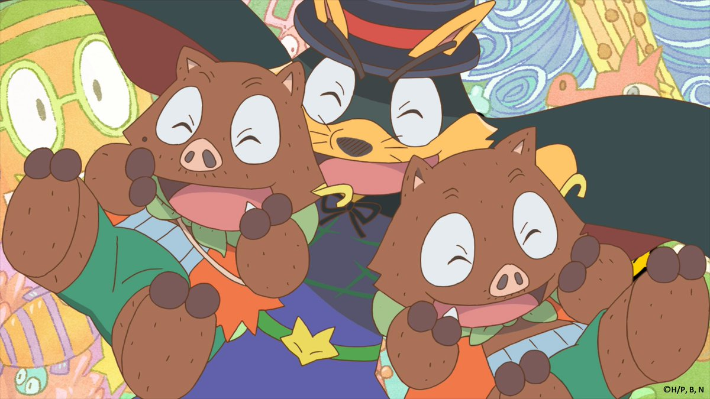

<DOCTYPE html>
<html lang = "ja">
<head>
<meta charset="utf-8">
<meta name=”viewport” content=”width=device-width,initial-scale=1.0″>
<title>  </title>
<link rel="stylesheet" href="zorori.CSS">
<style>
body{
  padding: 60px;
  margin:  60px;
  background-image: url("3ec862b93a8e4d199b13b6d2d25f3470.jpg");
  background-repeat: no-repeat;
  background-attachment: fixed;
  background-size: cover;
}

</style>
</head>
<body>

<h1 align="center">あらすじ</h1> 
<br><h2  align="center"> 
<br>擬人化された動物が暮らす世界（作中では地球の日本として扱われる）を舞台に、
<br>キツネの主人公ゾロリと、ゾロリの子分で双子のイノシシ兄弟イシシとノシシが、
<br>修行の旅をしながら行く先々で活躍するというストーリー。</br>
</body>

</html>